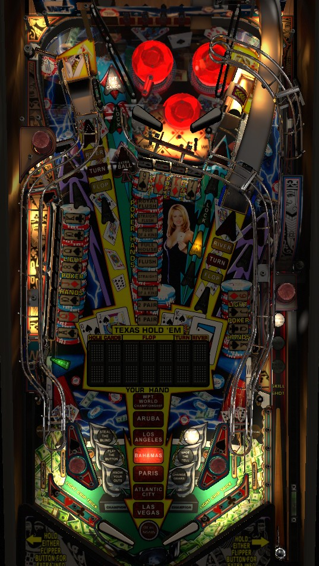

World Poker Tour is a very deep game with multiple routes of progression. Most of that progression can be made with the safety net of an additional ball in play by starting Ace in the Hole Multiball as often as possible by locking a ball at the "jail" in the upper playfield, then bashing the locked ball to release it. Hit drop targets corresponding to cards around the playfield to form Hands in the tower of white lights; making a hand lights one in lane to grant one shot of 3x scoring. which can be used on jackpots. Ramps advance Hold 'Em hands on the playfield display. The lower left standup targets lights locks for the conventional No Limit Multiball at the scoop next to the right ramp, which also starts modes.
The below picture of World Poker Tour's playfield was taken from the VPX recreation by RobbyKingPin et al.

The skill shot is a timing-based skill shot which can award either Advance Hold 'Em, Mystery, or Skill Flip. On the first plunge of the game, only Advance Hold 'Em can be earned, and the upper playfield right flipper will flip on its own a few times to indicate that that's where plunged balls will be directed. On any other plunge, the lit award will cycle between the three awards. Plunger skill shots are given after locking a ball for Ace in the Hole multiball, but not any other multiballs.
Advance Hold 'Em and Mystery are described in more detail in later sections. Skill Flip is a reflex flipper skill shot; when the ball gets dropped onto the upper playfield's right flipper, immediately shoot to the left of the white standup targets on the upper playfield to complete the skill shot. This scores 1,000,000 the first time, and increases by 1,000,000 each subsequent time.
The dot display within the playfield shows your progress on Texas Hold 'Em hands. On the first plunge of the game, you'll receive the two starting cards for your first hand; completing any hand also instantly starts the next hand. To complete a hand, shoot either ramp a total of 3 times to reveal the Flop, Turn, and River cards. Any completed hand scores the Main Pot value and lights the upper right saucer to start a Poker Corner mode. The base Main Pot value starts at 250,000 points and increases by 5,000 per spin recorded on either of the orbit spinners. For each subsequent hand, the starting value of the Main Pot increases by 25,000, and the increase per spinner goes up by 500. The Main Pot value then gets multiplied based on the best 5-card poker hand that could be made out of the 7 total cards shown in that hand.
Secret point awards are given if your two hole cards at the start of any Hold 'Em hand form specific combinations. These include:
Strangely, there do not appear to be bonuses for having your two hole cards be a pair of 6s, 9s, or 10s.
If the game is set to competition mode, randomness in the Hold 'Em rules is removed to prevent a luck-based competitive advantage. This is done by ensuring all players get hand results in the same order and disabling the secret hole card awards.
Tournaments are depicted by the Cities shown near the flippers, and are won by completing requisite numbers of Texas Hold 'Em hands. The value of a tournament does not depend on which city it is played in; all that matters is how many tournaments you've completed already. The first tournament requires 1 hand to complete and scores 1,000,000 points. Subsequent tournaments each require 1 more hand than the previous, and have a completion bonus worth 500,000 more than the previous. Extra balls are lit after completing the 2nd and 6th tournaments. Completing a tournament also lights all of the major shots on the lower playfield for Victory Lap, indicated by the large red arrow. Making a Victory Lap shot unlights it. For the first completed tournament on a single ball, Victory Laps score 100,000; for the second, 250,000; for the third, 450,000. I would guess, but have not confirmed, that Victory Laps for 4, 5, and 6 tournaments on one ball would score 700,000, 1,000,000, and 1,350,000 respectively. Completing all 6 cities qualifies the WPT World Championship mini-wizard mode.
WPT World Championship starts automatically when you complete the 6th and final city tournament. World Championship is a 4-ball multiball to start, but can continue as a single-ball mode until it is won or all balls drain. The goal of World Championship is to collect a total of 10,000,000 points from making Texas Hold 'Em hands, similarly to how the city tournaments were played. Now, instead of only being able to shoot the ramps to advance hands, any major shot on the lower playfield will progress a hand (either orbit, either ramp, either saucer). Flops and Turns always score 100,000 and 200,000 points respectively. The River base value begins at 250,000 at the start of World Championship, and increases by 12,500 for each drop target knocked down anywhere in the game. If all 16 are knocked down, you get a 1,000,000 Drop Bonus and all targets reraise so the River value can be increased further, up to a maximum of 1,000,000. Unlike the normal Tournament progression, the River (pot) value does not get reset after every hand, so if you hit a lot of drop targets early, you'll reap the benefits for the entire mode. When a hand is completed, the current River base value is assigned a multiplier based on the quality of the hand made using the same rules as the normal Hold 'Em hands. Scoring a total of 10,000,000 points in this mode specifically from advancing Hold 'Em hands or hitting drop targets will instantly end the mode, score a further 10,000,000, and return the game to normal play.
While the scoring in World Championship is not particularly notable relative to the amount of work to required to get here, it should always be taken seriously, because winning- not just reaching- a World Championship is needed to qualify the Keefer Invitational true wizard mode. It takes 21 completed Hold 'Em hands to reach the first World Championship; on the second time around, cities need 2-3-4-5-6-7 hands to win their tournaments instead of 1-2-3-4-5-6, so if you fail the first World Championship, it takes 27 more Hold 'Em hands to try again.
All In Multiball
As mentioned above, spinner hits advance the value of the Main Pot awarded for completing the current hand of Texas Hold 'Em. The Main Pot value starts at 250,000, +25,000 for each hand completed. Each spinner hit adds 5,000 (+500 per completed hand) per spin. Reaching the Main Pot threshold shown on the display instantly starts All In Multiball and completes the current Hold 'Em hand for free. The threshold required for All In Multiball is a Main Pot of 750,000 the first time, and the threshold increases by 250,000 each time All In Multiball is played. All In Multiball is a 3-ball multiball. The jackpot value starts at 100,000 points. Any switch in the game adds 1,000 to the jackpot, up to a maximum of 1,000,000 points. Jackpots can be scored at any major shot on the lower playfield.
16 drop targets are arranged around the playfield, in four groups of four. Each drop target corresponds to a different playing card.
Hitting a drop target will score the current drop target value and light that target solidly. The drop target value starts each ball at 10,000 points and increases by completing hands (1,000 at a time) or from Cut the Cards mystery (various amounts) up to a maximum of 50,000. The goal of Drop Target Poker is to form hands that are not already lit on the hierarchy, which is shown on the main playfield above the Texas Hold 'Em display. When one or more drop targets have been knocked down, any targets that can be used to complete a new hand will start flashing. When you complete a hand that you do not already have lit, you score 100,000 points times the same multiplier that is applied to each hand type during Texas Hold 'Em (1x for Pair, 2x for Two Pair, 3x for Three of a Kind, etc., up to 10x for Royal Flush). The game somewhat intends that you collect the hands from lowest to highest; for example, if you knock down two Kings as your first hand, the game will automatically count them as a Pair without letting you add on to them for Three of a Kind, Full House, etc. unless you hit additional cards in very quick succession after making the pair and before the game closes the hand. Also, when you score a hand, you get an additional 100,000 points for each unlit hand below the one you just scored. If Straight is the very first hand you make, you get 400,000 points (100,000 times the usual multiplier of 4 for the Straight), plus an additional 300,000 for the Pair, Two Pair, and Three of a Kind that are below Straight and have not yet been collected.
Collecting any poker hand lights one in lane for 3x. Going through a lit in lane activates 3x playfield scoring for 3 seconds, which applies to the next shot made on the lower playfield. Only one in lane will be lit for 3x at a time, but you can stack how many times it is lit; lane change alternates which in lane is lit. Use 3x scoring on a multiball jackpot, a River shot that completes a Texas Hold 'Em hand, or a drop target that completes a high value Drop Target Poker hand.
The left in lane lights Spin-a-Card at the Poker Corner saucer near the right ramp. Shooting this saucer when lit for Spin-a-Card will randomly spot a card for the current hand of Drop Target Poker. If one or more drop targets is flashing, Spin-a-Card appears as though it will usually pick a flashing card to help you finish a Drop Target Poker hand. The name of this feature and its design on the dot display are direct references to Spin-a-Card (Gottlieb, 1969).
Lighting all 9 poker hand types for Drop Target Poker instantly starts the 3-ball Poker Hands Multiball. During Poker Hands Multiball, completing drop target banks scores jackpots. The jackpot value starts at 1,000,000 and advances by 125,000 each time a jackpot is scored, up to a maximum of 2,500,000. Collecting 9 jackpots qualifies the Super Jackpot. The 9 "hands" inserts that showed which hands you had scored for regular Drop Target Poker also indicate your progress toward lighting this Super Jackpot. The top bank of drops scores a single jackpot, the right bank scores a double jackpot, and the entire left bank (all 8 targets) scores a triple jackpot. When a target is knocked down in one of these banks, you must complete the bank within about 15 seconds to score the jackpot, or the targets will be re-raised. Double and triple jackpots score 2x and 3x the jackpot value and count as 2 or 3 jackpots towards the 9 required for a Super Jackpot, but collecting a double or triple jackpot will still only add 125,000 to the regular jackpot value one time. When the Super Jackpot is qualified, shoot the rapidly flashing red arrow which moves between the ramps and saucers. The Super Jackpot value is reset to 5,000,000 every time it is qualified, and increases by 50,000 for each drop target hit while the Super Jackpot is lit. Drop targets hit while the Super Jackpot is qualified will instantly be re-raised. The base jackpot value for Poker Hands Multiball is preserved for the entire game, so you'll begin where you left off if you complete the 9 drop target hands a second time.
Starting Poker Hands Multiball also lights one out lane for a Special.
After Poker Hands Multiball has been played once, the hand progress resets for Drop Target Poker, and you start collecting hands from the beginning. Each time Poker Hands Multiball has previously been played adds 50,000 points to the base value of all hands in Drop Target Poker. In the above example where Straight is your first Drop Target Poker hand, if you have played Poker Hands Multiball once already, the value of the Straight is 600,000 (150,000, times 4 for the Straight) plus 450,000 (150,000 for each of the three uncollected hands below Straight in the hierarchy), instead of 400,000 + 300,000.
Between the white targets on the upper playfield is a captive ball area. This area does not contain a ball on its own, but can open up to trap one and release it later. To play Ace in the Hole Multiball, you need to do three things: hit the empty bars 3 times, then lock a ball there, then hit the locked ball 3 times to release it. (The number of hits required on the bars or the locked ball can increase to 4 or 5 if Ace in the Hole Multiball has already been played.) If you have not started a Poker Corner mode since the last time Ace in the Hole Multiball was played, you'll need to do so before hits on the empty bars will count toward another multiball.
Be on alert as soon as the locked ball is released. If you immediately relock the ball before all balls leave the upper playfield, you score 1,000,000 points and a ball is added to the playfield.
In Ace in the Hole Multiball, jackpots start at 200,000 points and are earned at either ramp or by hitting the empty lock at the upper playfield. After 5 jackpots, a ball can be relocked at the upper playfield. The first two times a ball is relocked in this way, a new ball will be autoplunged, the jackpot value is increased by 100,000, and the locked ball can be released by hitting it 5 more times, allowing the cycle to be repeated. After the add-a-ball is earned twice, further relocks at the upper playfield during Ace in the Hole qualify Super Jackpots, where hitting the locked ball scores 1,000,000 points per hit for 10 seconds, after which time the locked ball is automatically released and it takes 5 further hits to reopen the upper playfield lock. These rules continue until single ball play resumes.
Ace in the Hole Multiball is worth rather paltry points in the grand scheme of the game. However, it is often the most accessible multiball in the game. A common strategy is to lock a ball for Ace in the Hole, then get it down to needing only 1 more hit for release, but not actually starting the multiball until a Poker Corner mode is running, particularly Change Gears. Almost all other playfield features are in play during Ace in the Hole, though, so you can also use this multiball as a safety net while you complete Texas Hold 'Em hands, Drop Target Poker, hurry-ups, or shoot the spinners to add All In Multiball to the stack as well.
No Limit is World Poker Tour's most conventional multiball. Locks are lit by hitting the lower left standup target, just below the 8-bank of left drop targets. For the first multiball, multiple locks can be stacked by hitting the lock target multiple times, and locks can be made at either the Cut the Cards saucer (back left) or the Poker Corner saucer (upper right). After No Limit Multiball has already been played once: the lock target lights only one lock, you must lock a ball before another lock can be lit, and only the Poker Corner saucer can be used to lock balls. All locks are virtual; when the 3rd lock is made, 2 balls are autoplunged, starting No Limit Multiball with 3 balls.
In No Limit Multiball, the left ramp scores a jackpot. At the start of No Limit Multiball, a 1x jackpot is lit with a base value of 1,000,000 points. Shooting the left ramp to score the jackpot unlights it; to relight the jackpot, you must complete a bank of drop targets. If you complete the top bank first, the left ramp is lit for 1x jackpot. If you complete the right bank first, the left ramp is lit for 2x jackpot, and if you complete the entire left bank first (all 8 targets), the left ramp is lit for 3x jackpot. While a jackpot is lit, any drop target down adds 25,000 times the current jackpot multiplier to the jackpot itself. If you knock down all 16 drop targets, one random bank of 4 targets (splitting the left bank into its upper and lower halves) is re-raised. The first jackpot in No Limit Multiball has a base value of 1,000,000; the second starts at 1,250,000; starting with the third, all jackpots begin at 1,500,000.
The Poker Corner saucer is the upper right saucer, near the right ramp. It is lit to start a Poker Corner main mode during single ball play when no other Poker Corner mode is currently running. If it is not lit during single ball play, it can be relit by completing any Texas Hold 'Em hand. You are able to start any multiball while a Poker Corner mode is running. All Poker Corner modes are timed to 30 seconds. Modes only end when the time expires or the ball drains, but there are trophies awarded for doing well in each mode. Trophies award 1,000,000 points directly and increase the value of Poker Wizard mini-wizard mode, which is eligible after all 6 main modes have been played. Shooting the upper right saucer when it is lit for Poker Corner will start the currently flashing mode; the right flipper can be used to change which mode is flashing. There are 6 main modes.
After playing all 6 Poker Corner modes, the Poker Corner saucer is immediately lit to start Poker Wizard mode; you don't need to complete another Hold 'Em hand to relight the saucer. Poker Wizard is a 4-ball multiball. The jackpot value is based on how many of the 6 mode trophies you won when you played through the modes.
Jackpots can be lit at the left ramp, Cut the Cards saucer, Poker Corner saucer, and right ramp, respectively. When a jackpot is collected, you must clear a 4-bank of drop target to relight that jackpots: the lower half of the left bank relights the left ramp, the upper half of the left bank relights Cut the Cards, the top bank relights Poker Corner, and the right bank relights the right ramp. Collect as many of these jackpots as you can before multiball ends. There does not seem to be a super jackpot progression or any way to raise or multiply the jackpot once Poker Wizard has started.
After Poker Wizard is played, progress on the 6 main modes resets and they can be played again. However, earned trophies are preserved, and replaying a mode whose trophy you have previously earned causes all scoring within that mode to be doubled. If you did not get a mode's trophy the first time, the requirements do not get any easier or harder on the second attempt, but you do not carry over any progress between attempts. It is not possible to earn more than one trophy in any single mode.
Hitting any of the white standup targets on the upper playfield awards a word in the phrase World Poker Tour. Collecting all 3 words starts a hurry-up. The opening value of a hurry-up is 1,000,000 points, plus an additional 100,000 for each hurry-up already completed during the game so far. Hurry-ups count down rather quickly to 100,000 points, then stay there for a few seconds before timing out. Hurry-ups are collected by shooting the hole to the right of the white targets, which drops the ball into the pop bumpers. Hitting a white standup target adds 100,000 to the current hurry-up value up to a maximum of 5,000,000 and briefly pauses its countdown. (For a double hurry-up, which can only be started from Cut the Cards mystery award, each white target hit adds 200,000 and the maximum is 10,000,000.) It is also quite hard to collect a hurry-up at all if the ball drains between the upper playfield flippers before the hurry-up is scored.
Collecting 10 hurry-ups in a game lights an extra ball at Cut the Cards. All other even-numbered hurry-ups given an additional award of holding a value that would otherwise be reset at the end of the ball, such as the Main Pot, Side Pot, drop target value, pop bumper value, bonus X, or chip trick value.
Shooting either orbit at any time during any multiball scores a Side Pot. Side Pot starts each ball at 100,000 points and is increased by the bumper value each time a pop bumper is hit. Pop bumpers start each ball at a value of 1,000 points, which can be increased 500 at a time by completing the standup targets behind the bumpers (indicated by red LEDs at the back of the game, which can be moved with flipper lane change) or from Cut the Cards mystery award. The Side Pot value maxes out at 1,000,000 points. Extra balls are lit for collecting 10, 60, and 110 Side Pots over the course of a game.
Chip Tricks are World Poker Tour's combo feature, and they are indicated by small white arrows on both orbits, both ramps, and the Poker Corner saucer. Making the right in lane or exiting the upper playfield between the flippers will cause the left orbit and left ramp Chip Tricks to flash, and shooting the left ramp or making the left in lane will cause Chip Trick to flash at Poker Corner, the right ramp, and the right saucer. Flashing shots unlight after just a few seconds. Making a shot while it is flashing will add that shot's value to the Chip Trick total, then score said total.
The Chip Trick total resets at the start of each ball (unless it was held over from the previous ball by a hold award from Hurry-up) and can also be increased by some Cut the Cards mystery awards. It maxes out at 1,000,000 points. Making consecutive Chip Tricks as a combo will cause the second Trick to add 2x its shot value to the total, and then also score 2x the total.
You can always make a Chip Trick at any shot. If a normal Chip Trick is not running, you can tell which shots have had a Chip Trick made towards the current Super Trick by whether or not the Chip Trick white arrow at that shot is solidly lit. Making a Chip Trick at all five shots starts Super Trick immediately. In Super Trick, the goal is to shoot the 5 Chip Trick shots again once each, with no more than 10 seconds of time passing between them. (The timer is reset back to 10 when you make a shot.) Flashing shots in Super Trick score 2x, 3x, 4x, 5x, then 6x the current Chip Trick value, but they do not add to the Chip Trick value. Extra balls can be lit at Cut the Cards for completing Super Trick; the first extra ball requires completing Super Trick 1 time, the second extra ball requires 2 additional completions, etc.
Cut the Cards mystery award is available at the back left saucer, just to the right of the left ramp. If Cut the Cards is not lit, shoot the leftmost shot on the upper playfield to relight it. The first time that Cut the Cards is shot in a game, the upper playfield left flipper will be automatically flipped a few times to indicate that the ball will be popped toward that flipper.
Below is a list of Cut the Cards awards I have seen, which may not be exhaustive. Several awards have the same effect but in varying values; those values are listed in parentheses, and also may not be exhaustive.
Keefer Invitational is the true wizard mode of World Poker Tour, and it is often considered one of the hardest wizard modes to reach in all of pinball. To qualify for Keefer Invitational, you must do all of the following:
When all 6 of these requirements are met, the next award from Cut the Cards mystery is guaranteed to be Keefer Invitational.
Keefer Invitational is a 4-ball multiball that starts with a very generous ball save. You are given 25,000,000 points for free just for starting the mode. For as long as multiball is running, you also get:
There isn't much strategy to this mode; just keep everything in play as long as possible. If you're down to just 2 balls remaining, consider shooting for drop targets to earn an add-a-ball to keep the train going as long as possible. Unfortunately, the presentation of Keefer Invitational is somewhat lackluster: the WPT World Championship music is reused, there are no callouts anywhere in the multiball except for Side Pots (which can still be earned), and the DMD animations are quite plain. The scoring available makes up for it, though. Enjoy one of the most rarely seen modes anywhere in pinball.
When single ball play resumes, your progress toward the 6 requirements is reset. It takes another WPT World Championship victory and an additional 30,000,000 points, not just 25,000,000, to requalify each of the 6 criteria for Keefer Invitational. I would expect, but have not confirmed, that all requirements increase by 5,000,000 on every loop, so a third Keefer Invitational requires 35,000,000 in each category.
If you want to make serious attempts to reach Keefer Invitational, keep the following in mind:
World Poker Tour has a conventional in/out lane setup with no kickbacks, center posts, or gates. Out lanes are lit for Special by starting Poker Hands Multiball. Making an in lane during single ball play qualifies Chip Trick combo awards on the opposite side of the table for a few seconds. In lanes can also be lit for Triple Score, which causes the next lower playfield shot to score 3x value for the next 3 seconds. Flipper lane change can be used to swap which in/out lanes are lit.
The end of ball bonus consists of:
all multipled by the bonus multiplier. Bonus multiplier is increased by Cut the Cards mystery awards or by completing the standup targets located behind the pop bumpers. There does not seem to be a meaningful limit on the bonus multiplier; it can definitely exceed 50, though very few balls will see more than 10x bonus. Bonus tends not to be a meaningful portion of scoring on World Poker Tour, so don't be too afraid to tilt a ball unless you've collected Add Bonus X from Cut the Cards mystery multiple times on that ball.
| If you need... | Try... |
| 1,000,000 points | ...starting Ace in the Hole Multiball or any Poker Corner mode, or completing a Texas Hold 'Em hand. |
| 5,000,000 points | ...starting No Limit Multiball or one of the drop target-based Poker Corner modes (A Chip & A Chair or Know Your Outs). |
| 20,000,000 points | ...completing Drop Target Poker hands to get to Poker Hands Multiball, or starting A Chip & A Chair or Know Your Outs followed by Ace in the Hole or All In Multiball. |
| 50,000,000 points | ...starting Change Gears followed by any multiball, or grinding out No Limit Multiballs (possibly stacked with All In or Ace in the Hole Multiball) and/or high-value Texas Hold 'Em hands. |
| 100,000,000 points or more | ...playing multiballs as often as possible, stacking them with each other or Poker Corner modes. Texas Hold 'Em hands become increasingly valuable as the game goes on, if ramps are easy to shoot (specifically check if the right ramp can be backhanded). Shooting spinners not only gives progress toward All In Multiball, which spots hands itself, but also invites higher Main Pot values on future Texas Hold 'Em hands. Use the 3x scoring that is lit on the in lanes after completing Drop Target Poker hands as wisely as possible, multiplying shots that score jackpots in No Limit/Poker Hands Multiball or ramp shots that complete a high-value Texas Hold 'Em hand. |